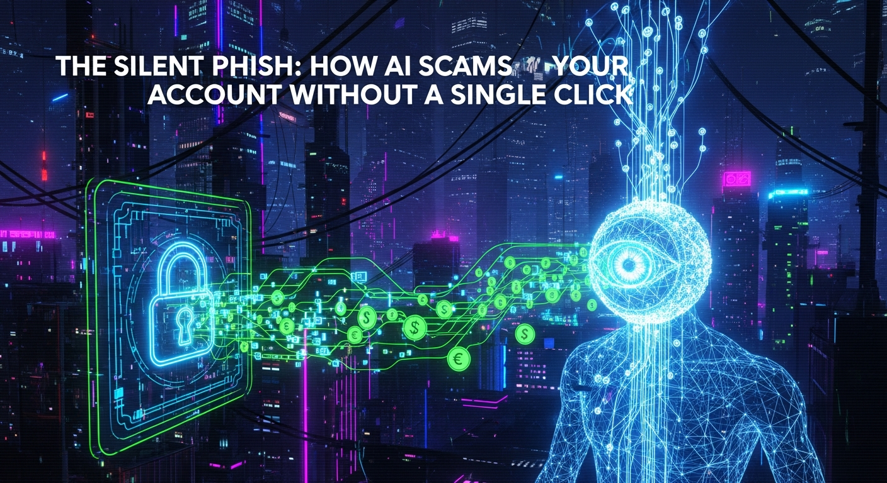

The digital age has ushered in an era of unprecedented convenience, but with it, a shadow realm of sophisticated threats. For years, the term "phishing" conjured images of poorly written emails promising Nigerian princes or urgent bank alerts demanding a click on a suspicious link. We learned to spot the grammatical errors, the incongruous sender addresses, and the overt requests for personal data. We developed a sixth sense for the digital bait. However, the game has fundamentally changed. The advent of artificial intelligence (AI) has empowered cybercriminals to evolve beyond the simplistic lure, crafting a new breed of attack so insidious, so personalized, and so automated that it can drain your bank account without you ever clicking a malicious link, opening a suspicious attachment, or even interacting directly with the scammer. Welcome to the age of the "Silent Phish" – a pervasive, AI-driven threat that operates in the digital shadows, meticulously exploiting vulnerabilities and impersonating trust with chilling precision.
This isn't about human error in identifying a fake email; it's about AI exploiting systemic weaknesses, generating synthetic identities, and orchestrating complex financial maneuvers with minimal human intervention. The traditional defense mechanisms, honed over decades, are proving inadequate against an adversary that learns, adapts, and executes at machine speed. From deepfake impersonations that bypass biometric verification to automated exploits that probe network defenses, the silent phish represents a paradigm shift in cybercrime. It demands a deeper understanding, a more proactive defense, and a fundamental re-evaluation of how we protect our digital financial lives. This article delves into the intricate mechanisms of these AI-powered silent attacks, dissecting their methods, exploring the technologies that enable them, and outlining the critical strategies necessary to safeguard your assets against this invisible, clickless adversary.
For decades, phishing was a numbers game. Attackers would cast a wide net, sending out millions of generic emails hoping a small percentage of recipients would fall for obvious ploys. These early iterations were characterized by their lack of sophistication: poor grammar, pixelated logos, and transparently fake requests for credentials. Users were trained to look for red flags like misspelled domains and urgent, fear-mongering language. The success rate, while low, was sufficient given the sheer volume of attacks. However, as internet users grew savvier and email filters became more effective, the efficacy of these blunt instruments began to wane. This forced a strategic pivot among cybercriminals, leading to more targeted attacks known as spear-phishing, where attackers would research specific individuals or organizations to craft more convincing lures. Yet, even spear-phishing often relied on human interaction – a click, a download, a credential entry – to achieve its objective. The "Silent Phish" represents a quantum leap beyond even this, leveraging artificial intelligence to automate, personalize, and execute attacks with unprecedented autonomy, often bypassing any requirement for direct user interaction or conscious decision-making.
The transition from mass spam to AI-driven sentience is marked by several key advancements. Firstly, AI's ability to process and analyze vast datasets has transformed victim profiling. Instead of guessing, AI algorithms can scour public social media profiles, leaked databases, corporate websites, and even dark web forums to construct incredibly detailed profiles of potential targets. This includes their habits, relationships, professional roles, financial proclivities, and even their emotional triggers. This data allows AI to craft hyper-realistic impersonations and scenarios tailored to individual vulnerabilities, making a scam almost indistinguishable from legitimate communication or activity. For instance, an AI might learn that a target frequently uses a specific online shopping platform and then generate a highly convincing, dynamically personalized email or SMS message related to a recent purchase, complete with accurate order numbers and shipping updates, designed to elicit a desired action without raising suspicion. The psychological manipulation is no longer generic; it is bespoke, a product of machine learning algorithms identifying patterns that human scammers would never discern at scale.
Secondly, AI has enabled the automation of attack vector identification and exploitation. Traditional phishing relies on tricking a human; silent phishing can involve AI probing network defenses, identifying software vulnerabilities (including zero-day exploits), and initiating automated attacks against systems directly. This could mean AI-powered bots attempting to brute-force credentials, exploit misconfigured APIs, or inject malicious code into web applications. The AI acts as a tireless, intelligent adversary, continuously scanning, learning, and adapting its attack strategies in real-time. It can identify the weakest link in a company's cybersecurity posture, whether it's an outdated server, an unpatched application, or an employee with lax security practices, and then orchestrate a precise, multi-stage attack without needing a human operator to manually guide each step. This level of automation means attacks can be launched at scale against thousands of targets simultaneously, with the AI adapting its approach based on the responses and defenses encountered, effectively conducting an automated, distributed penetration test with malicious intent.
Moreover, the rise of generative AI has added a terrifying dimension to impersonation. Beyond just text, AI can now synthesize realistic voices, generate deepfake videos, and even create entirely new, believable digital identities. This allows for sophisticated social engineering where the AI might not even need to send a malicious link. Instead, it could impersonate a trusted colleague in a video conference, a bank representative in a phone call, or a family member in a voice message, convincing the target to divulge information or authorize transactions through sheer, undeniable realism. The "click" is replaced by a spoken command, a biometric scan, or an automated system response triggered by an AI-generated input. This shift moves the battleground from email inboxes to the very fabric of digital identity and trust, challenging our ability to discern reality from AI-fabricated deception. The silent phish operates not just on the periphery of our digital lives, but at its very core, leveraging intelligence to bypass our defenses and manipulate our perceptions without us ever realizing we are under attack.
The "Silent Phish" operates on principles far more sophisticated than simply tricking a user into clicking a link. It represents a paradigm shift where artificial intelligence takes on the role of a hyper-efficient, autonomous orchestrator of deception, often exploiting systemic vulnerabilities or manipulating automated processes without any direct human interaction from the victim. The anatomy of such an attack is complex, multi-layered, and designed to bypass traditional security measures that rely on user vigilance or signature-based detection. At its core, AI's role is to identify weaknesses, generate convincing facades, and automate the execution of malicious actions, effectively becoming an invisible hand guiding the attack from reconnaissance to exfiltration.
One primary method involves AI-driven reconnaissance and vulnerability exploitation. Unlike human attackers who might spend days or weeks manually probing systems, AI can scan vast swathes of the internet, company networks, or specific target profiles in mere minutes. It identifies outdated software, unpatched vulnerabilities, misconfigured servers, weak API endpoints, or even predictable employee behaviors that can be leveraged. For example, an AI might discover an exposed database containing employee credentials, then use machine learning to predict common password patterns or identify weak points in multi-factor authentication (MFA) implementations. Once a vulnerability is identified, the AI can then automatically generate and execute exploits. This could involve SQL injection attacks, cross-site scripting (XSS), or even leveraging zero-day exploits purchased on the dark web, all orchestrated without any human "click" from the victim. The goal is to gain unauthorized access to accounts or systems directly, bypassing the need to trick a user into providing credentials.
Another critical aspect is AI's capacity for advanced social engineering at scale, even without a click. While traditional social engineering relies on a human crafting a convincing story, AI can generate dynamic, context-aware narratives that adapt in real-time. Imagine an AI monitoring a target's online activity, identifying a pending financial transaction or a recent significant life event. It could then generate a highly personalized, urgent message (SMS, email, or even an automated call using voice cloning) impersonating a bank, a government agency, or a trusted associate. The message might not contain a malicious link but instead instruct the user to call a specific number (an AI-operated voice system) or log into a legitimate-looking but subtly compromised portal that the AI itself has set up. The AI might also use predictive analytics to determine the optimal time to launch such an attack, for instance, when the target is typically distracted, stressed, or less likely to scrutinize details, thereby maximizing the chances of success without requiring a direct click on a malicious payload.
Furthermore, AI can play a crucial role in bypassing automated defenses. Many systems use CAPTCHAs, behavioral biometrics, or anomaly detection to prevent automated attacks. However, advanced AI models are increasingly capable of solving complex CAPTCHAs, mimicking human typing patterns, mouse movements, and browsing behaviors to bypass bot detection systems. This allows AI to perform automated credential stuffing attacks, where it tries millions of leaked username/password combinations against various services until a match is found. Once inside an account, the AI can then automate the process of siphoning funds, changing account settings, or exfiltrating sensitive data, often by interacting directly with the bank's or service provider's API, mimicking legitimate user actions or even leveraging internal system vulnerabilities it has identified. The entire sequence, from initial breach to financial gain, can be executed with minimal or no human intervention from the scammer, and critically, no conscious action from the victim beyond perhaps having reused a password or having an unpatched system. The silent phish transforms the attacker from a manual operator into a strategic architect, with AI serving as the tireless, intelligent workforce executing the malicious blueprint.
The most chilling aspect of the "Silent Phish" lies in its ability to transcend simple text-based deception, leveraging generative AI to create hyper-realistic impersonations that can fool not just humans, but increasingly, automated security systems. This advanced AI impersonation toolkit includes deepfake videos, sophisticated voice cloning, and the potential to bypass biometric authentication, fundamentally eroding our ability to trust what we see and hear in the digital realm. These technologies are no longer confined to the realm of science fiction; they are actively being weaponized by cybercriminals to execute silent, clickless scams that directly target our financial security and personal identity.
Deepfake technology, initially a novelty, has rapidly evolved into a potent weapon for identity fraud. By training AI models on vast datasets of images and videos of an individual, attackers can generate incredibly convincing synthetic media that shows a person saying or doing things they never did. In the context of financial fraud, deepfakes pose a direct threat to Know Your Customer (KYC) processes that rely on video verification. Many banks and financial institutions now require users to submit a video selfie or participate in a live video call to verify their identity, especially for opening new accounts or authorizing large transactions. An AI-generated deepfake of a legitimate customer, created using publicly available footage (e.g., from social media), could potentially be used to bypass these video-based KYC checks. The deepfake might convincingly blink, move its head, and even respond to prompts, fooling the automated system or even a human operator into believing they are interacting with the legitimate account holder, thereby granting the attacker access to open new lines of credit, transfer funds, or take over existing accounts without the actual person ever being aware until it's too late. The sophistication of these deepfakes is such that they can mimic subtle facial expressions, speech patterns, and even emotional nuances, making detection extremely challenging.
Complementing deepfakes is the terrifying capability of AI voice cloning. With just a few seconds of an individual's voice recording (easily obtained from voicemails, social media videos, or conference calls), AI can generate new speech in that person's voice, articulating any desired message. This poses an immense threat to call centers, customer service lines, and any system that relies on voice authentication or human recognition. An attacker could use a cloned voice to impersonate a bank customer, call their bank, and authorize fraudulent transactions, reset passwords, or extract sensitive information. The bank's security protocols, including questions about personal details, might be answered accurately using information gathered through prior AI-driven data breaches or social engineering, further enhancing the credibility of the cloned voice. The victim would receive no suspicious email or link; their bank account could be drained simply by a convincing AI-generated phone call. This is particularly dangerous as many people still perceive voice communication as inherently more trustworthy than text, a perception that AI is now exploiting mercilessly.
Humanize your text and bypass any AI detector instantly with Undetectable AI.
BYPASS AI DETECTION NOWBeyond visual and auditory impersonation, AI is also advancing towards bypassing behavioral biometrics. Many advanced fraud detection systems analyze unique patterns in how users interact with their devices – typing rhythm, mouse movements, scrolling speed, and even the pressure applied to a touchscreen. These "behavioral biometrics" are considered a passive form of authentication, adding a layer of security without requiring explicit user action. However, AI, having analyzed vast amounts of data on human interaction patterns, can learn to mimic these behaviors. An AI could potentially replicate a victim's unique typing cadence or mouse navigation style, fooling a system designed to detect anomalous behavior. This means that even if an attacker gains credentials, their access might still be blocked if their interaction patterns don't match the legitimate user. But with AI's ability to learn and reproduce these intricate human-like behaviors, this critical layer of defense could be compromised, allowing an AI-driven silent phish to fully impersonate a user, navigate their online banking portal, and execute transactions without ever triggering an alert. The convergence of deepfakes, voice clones, and behavioral mimicry creates a formidable AI impersonation toolkit, capable of dismantling the very foundations of digital identity and trust, making the "Silent Phish" an existential threat to personal financial security.
The true power of the "Silent Phish" is realized when AI transitions from mere deception to direct action, orchestrating account takeovers and executing fraudulent transactions without the need for a single user click. This represents the pinnacle of AI-driven financial crime, where the invisible hand of artificial intelligence manipulates digital systems, bypasses security protocols, and siphons funds with chilling efficiency. The automation and intelligence inherent in these attacks make them incredibly difficult to detect in their initial stages, often leaving victims unaware until their accounts are already compromised and their assets depleted.
One of the primary ways AI facilitates account takeovers (ATOs) is through automated credential stuffing and brute-force attacks. Cybercriminals routinely compile massive databases of leaked usernames and passwords from various data breaches. AI algorithms can then systematically test these compromised credentials across a multitude of online services, including banking portals, e-commerce sites, and financial applications. Unlike human attackers who are limited by speed and scale, AI can perform millions of login attempts per second, adapting its strategy based on responses from target systems (e.g., identifying rate limits, CAPTCHA challenges, or specific error messages). Modern AI is increasingly capable of solving complex CAPTCHAs, rendering a common defense mechanism ineffective. Once an AI identifies a successful login, it can then automatically log into the victim's account. From there, the AI can be programmed to change passwords, update contact information, or even disable multi-factor authentication (MFA) if it finds a vulnerability, effectively locking out the legitimate user and securing control of the account without any direct interaction from the victim.
Beyond gaining initial access, AI plays a crucial role in automating the execution of fraudulent transactions. Once an account is compromised, the AI doesn't just sit idle; it immediately begins to exploit its access. It can analyze the victim's transaction history, spending habits, and account balances to identify optimal times and methods for fund exfiltration that are least likely to trigger fraud alerts. For instance, an AI might initiate a series of small, seemingly legitimate transactions that fall below typical fraud detection thresholds, gradually draining an account over time. Alternatively, it might identify a window of opportunity to initiate a large transfer to an offshore account, leveraging its ability to bypass certain behavioral biometrics or timing the transaction to coincide with periods of low human oversight (e.g., weekends or late nights). The AI can interact directly with banking APIs, mimicking legitimate requests for transfers, bill payments, or even applying for new loans or credit cards in the victim's name, all automated and executed without the victim needing to click a single link or authorize anything directly.
Furthermore, AI can be used to navigate and exploit complex financial ecosystems, including cryptocurrency exchanges and payment processors, to launder stolen funds. An AI can automatically create multiple intermediary accounts, transfer funds through intricate networks of digital wallets, and convert currencies to obscure the money trail. This level of automated obfuscation makes it incredibly difficult for law enforcement and financial institutions to trace the stolen assets. The "invisible hand" of AI ensures that the entire lifecycle of the fraud – from initial reconnaissance and account takeover to fund exfiltration and laundering – is executed with minimal human intervention from the scammer's side, and crucially, without any active participation or even awareness from the victim. The silent phish thus represents a new frontier in financial crime, where the attacker's intelligence is augmented by machine capabilities, transforming the landscape of digital security and demanding a radical re-evaluation of our defense strategies against an adversary that operates entirely in the shadows.
Countering the "Silent Phish" requires a multi-faceted defense strategy that leverages the very technology empowering the attackers: artificial intelligence. While AI is a formidable weapon in the hands of cybercriminals, it is also an indispensable tool for cybersecurity professionals. Defending the digital fortress against clickless, AI-orchestrated scams demands a proactive, adaptive, and intelligent approach that combines advanced AI-powered solutions with unwavering human vigilance and continuous education. The goal is to build a resilient security posture that can detect, prevent, and respond to threats that operate below the threshold of traditional detection methods.
At the forefront of AI-powered defense are advanced fraud detection systems that utilize machine learning and behavioral analytics. These systems constantly monitor user activity, transaction patterns, and network traffic for anomalies that might indicate a silent phish attack. Unlike rule-based systems that look for known signatures, AI can identify subtle deviations from normal behavior – such as changes in login times, unusual transaction amounts, or access from unfamiliar geographic locations – that could signal an account takeover. For instance, if an AI observes a user who typically logs in from London during business hours suddenly attempting to transfer a large sum of money from a device in a different country at 3 AM, it can flag this as suspicious, even if the credentials used are correct. Behavioral biometrics, ironically, also serve as a defense. While AI can try to mimic human behavior, defensive AI continuously learns and refines its understanding of legitimate user patterns, making it harder for adversarial AI to perfectly replicate them. These systems can analyze typing cadence, mouse movements, and navigation paths, creating a unique digital fingerprint for each user that is incredibly difficult to spoof.
Beyond behavioral analysis, AI is crucial for real-time threat intelligence and anomaly detection. AI-driven security platforms can ingest and process vast amounts of data from global threat feeds, dark web monitoring, and internal network logs. This allows them to identify emerging attack vectors, new deepfake generation techniques, or novel voice cloning methods as they appear. By correlating disparate pieces of information, AI can detect sophisticated, multi-stage attacks that might otherwise go unnoticed. For example, an AI might detect a sudden surge in failed login attempts followed by a successful login using slightly altered credentials, even if individual events don't trigger an alert. Furthermore, AI can be used to analyze incoming communications (emails, SMS, voice calls) for characteristics indicative of AI-generated content, such as subtle digital artifacts in deepfake videos or unnatural speech patterns in cloned voices, helping to identify and block these deceptive attempts before they can lead to a compromise.
However, technology alone is not enough; human vigilance remains paramount. Education is a critical defense line. Individuals must be continuously educated about the evolving nature of AI scams, understanding that threats no longer require a click. They need to be aware of the possibility of deepfake impersonations in video calls, cloned voices in phone calls, and the importance of verifying unusual requests through independent channels (e.g., calling the bank back on a known number, not one provided in a suspicious message). Robust multi-factor authentication (MFA), particularly hardware-based MFA like FIDO2 security keys, remains an essential defense, as it adds a physical layer of security that is extremely difficult for AI to bypass. Organizations must implement zero-trust architectures, continuously verify identities and device integrity, and conduct regular security audits and penetration testing to identify and patch vulnerabilities before AI-driven attackers can exploit them. The defense against the "Silent Phish" is an ongoing AI vs. AI arms race, where proactive investment in defensive AI and a well-informed, vigilant human element are the only ways to safeguard our digital financial future.
The relentless advancement of artificial intelligence ensures that the landscape of financial crime and cybersecurity is in a constant state of flux. The "Silent Phish" is merely a harbinger of more sophisticated, autonomous, and pervasive threats to come. As AI capabilities expand, so too will the ingenuity of malicious actors, creating an escalating AI arms race between cybercriminals and security professionals. Understanding this evolving future landscape is crucial for developing proactive strategies and ensuring the resilience of our financial systems and personal assets against an increasingly intelligent adversary.
One of the most significant future trends will be the continued sophistication of generative AI for deception. We can expect deepfakes and voice clones to become virtually indistinguishable from... and implement these strategies to ensure long-term success.
In summary, staying ahead of these trends is the key to business longevity and security. By following this guide, you maximize your growth and ensure a stable digital future.
Don't wait for the headlines. Our Private Telegram Channel delivers real-time AI security updates and digital wealth strategies before they go viral. Stay protected. Stay ahead.
⚡ JOIN THE 1% NOW